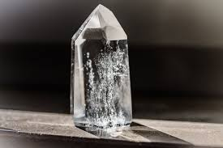
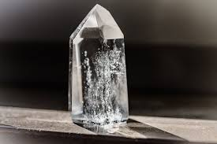

This means that people did not make it. Steel is not a mineral because it is an alloy produced by people.
inorganic
The substance is not made by an organism. Wood and pearls are made by organisms and thus are not minerals.
solid
This means that it is not a liquid or a gas at standard temperature and pressure.
definite chemical composition
All occurrences of the mineral have a chemical composition that varies within a specific limited range. For example: the mineral halite (known as "rock salt" when it is mined) has a chemical composition of NaCl. It is made up of an equal number of atoms of sodium and chlorine.
ordered internal structure
The atoms in a mineral are arranged in a systematic and repeating pattern. The structure of the mineral halite is shown in the illustration on this page. Halite is composed of an equal ratio of sodium and chlorine atoms arranged in a cubic pattern.


 
